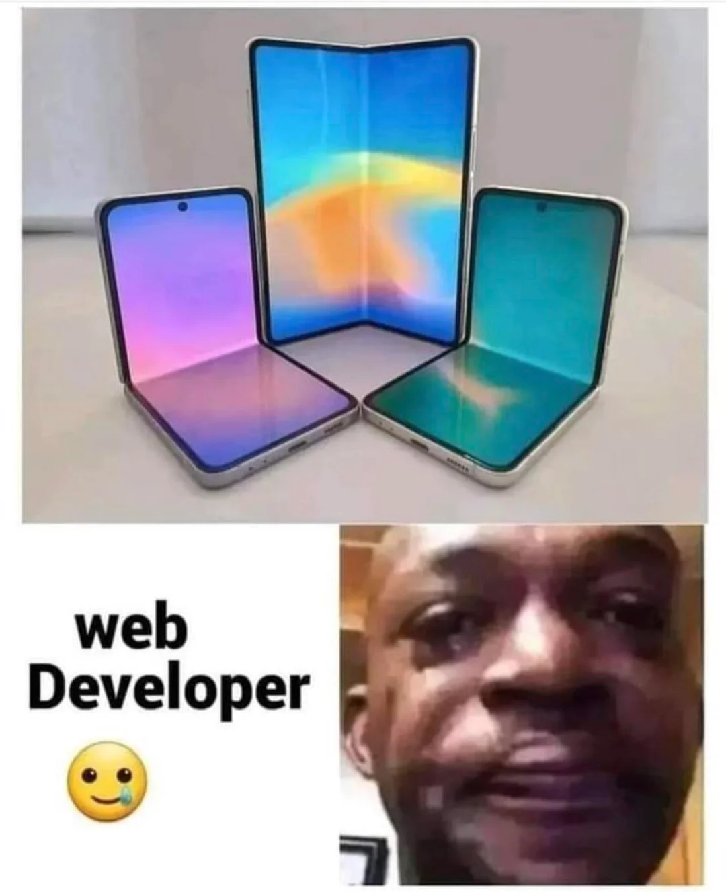

I hope to learn how to make simple web pages as a way to better understand how they work. I also would like to be able to make own simple web pages. I feel as though this is a good skill to have. This may allow me to broaden my horizens professionally and may spark further interest in web development.
 Reddit Post